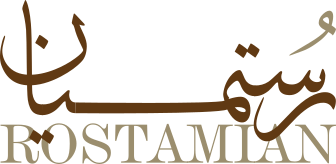
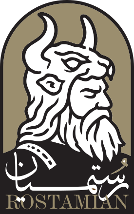

Brand Identity · Logo Presentation

The Persian title, the Latin lettering, and the palette behind the identity.
01 — Overview
An identity rooted in Persian craft.
Rostamian is a family name with deep Persian roots, and the identity leans into that inheritance with restraint.
The primary brand title is the Persian name, drawn by hand as calligraphy — its long baseline stroke sweeping beneath the letters. Beneath it, the Latin name is custom serif lettering set in a warm bronze tone, so the lockup reads as engraved stationery rather than a digital logo. Both titles are artwork; neither can ever be recreated with a font.
Beside the titles stands the emblem: an illustrated scene inside a Persian arch, drawn for this mark alone. The system is deliberately compact — four colors, three logo versions, one master file — so it stays consistent wherever it lands.
02 — The Logo Suite
Four ways the mark appears.
Each version has a job. The horizontal lockup leads on print and letterheads, the stacked lockup anchors covers and signage, and the single-color emblem takes over when space, size, or contrast demand it.


03 — Anatomy
Built from three craft elements.
The arch
The emblem is framed by a Persian arch — the iwan silhouette. It gives the mark architecture and dignity, and it keeps the illustration contained and legible at every size.
The illustration
Inside the arch, a miniature-style scene is drawn by hand. It carries the character of the mark — detailed up close, reduced to a confident silhouette when small. That is exactly why the single-color emblem exists.
The two titles
The Persian title carries the brand: the name drawn as nastaliq-style calligraphy, its baseline extended into a long sweep. The Latin name sits beneath it as custom serif lettering in bronze. Both are drawn once, as artwork — neither may ever be recreated with a font.
- 1The arch — the framing silhouette
- 2The scene — the illustrated center
- 3The Persian title — custom calligraphy, the primary brand title
- 4The Latin lettering — custom serif wordmark
05 — Typography
Two scripts, two companion faces.
The brand speaks in two scripts, each with its own pairing — a classical serif with a quiet grotesk for Latin, Doran with Nian for Persian. The brand titles themselves stay custom artwork; these faces serve the text around them.
Cormorant Garamond
Latin display — headings and large lines.
ABCDEFGHIJKLMNOPQRSTUVWXYZ abcdefghijklmnopqrstuvwxyz 0123456789
Weights used — 500 · 600
Jost
Latin body & labels — copy, notes, and captions.
ABCDEFGHIJKLMNOPQRSTUVWXYZ abcdefghijklmnopqrstuvwxyz 0123456789
Weights used — 300 · 400 · 500
Doran
Persian titles — headings in Doran.
آ ا ب پ ت ث ج چ ح خ د ذ ر ز ژ س ش ص ض ط ظ ع غ ف ق ک گ ل م ن و ه ی ۰۱۲۳۴۵۶۷۸۹
Weights used — 700
Nian
Persian body & subtitles — copy and labels in Nian.
آ ا ب پ ت ث ج چ ح خ د ذ ر ز ژ س ش ص ض ط ظ ع غ ف ق ک گ ل م ن و ه ی ۰۱۲۳۴۵۶۷۸۹
Weights used — 400 · 700
04 — Color
The project palette.
Four tones carry the whole system. Click any swatch to copy its HEX value.
Wordmark tone, display accents, quiet fields.
Emblem artwork, deep fields, small labels.
Single-color emblem, text, hairline rules.
Backgrounds, reversed-mark fields, breathing room.
Suggested balance in application
Approved pairings
*CMYK values are conversion approximations — confirm on press proofs. Pure white (#FFFFFF) appears only as knockout detail inside the stacked lockup; treat it as part of the illustration, not a standalone field color.
06 — Usage
Keeping the mark sharp.
The mark survives contact with the real world through three habits — generous clear space, honest scaling, and switching to the single-color emblem when color or contrast runs out. Do use the reversed emblem on deep fields, and always scale from the master files.
Clear space
Keep a margin of at least x — one quarter of the emblem's width — free of type, rules, or other artwork on every side.
Minimum sizes
Below these sizes the illustration closes up — switch to the emblem alone, or enlarge the placement.
What to avoid
The mark is drawn — these treatments break the drawing.
07 — Files
What's delivered.


Vector files are production-ready as delivered. For print, convert with the CMYK values in the palette section and outline the artwork from the master file before sending to press.
Typeface files
Licensed brand fonts — WOFF format, for web and desktop use.